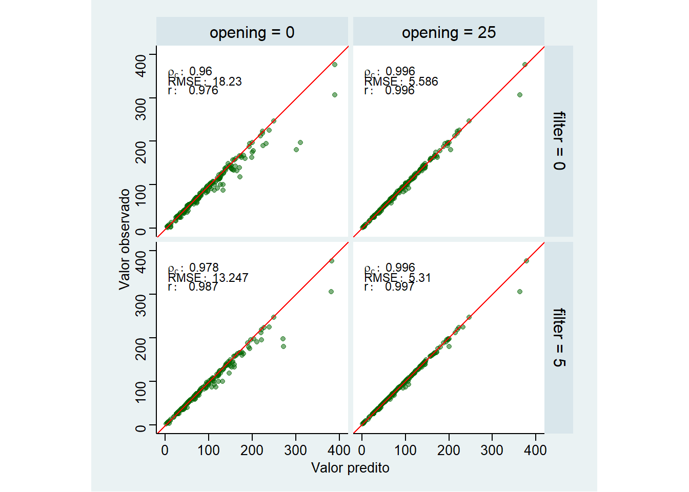
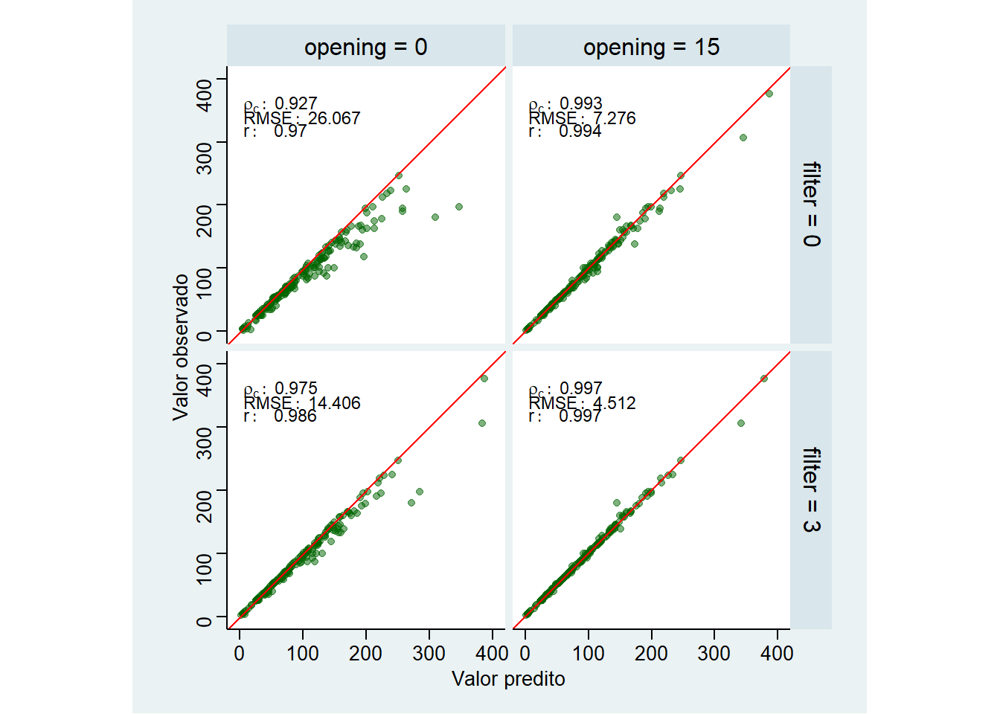

A Concordância de Lin ou Coeficiente de Correlação de Concordância (CCC) é uma métrica que avalia simultaneamente a precisão e a acurácia entre duas variáveis contínuas. Ela é frequentemente utilizada para medir o grau de concordância entre dois métodos de mensuração ou entre observações pareadas.
Enquanto o coeficiente de correlação de Pearson r mede apenas a precisão (a força da associação linear), o CCC incorpora também a acurácia (quão próximo os dados estão da linha de identidade.
# cria uma nova coluna em cada resolução contendo os valoresdfvalid<-df|>group_by(resolucao)%>%nest()|>mutate(ccc =map(data, function(x){x|>group_by(filter, opening)%>%ccc(real, predito)|>mutate( ccc =paste0("rho[c]:~", round(ccc, 3)), rmse =paste0("RMSE:~", round(rmse, 3)), r =paste0("r:~~~", round(r, 3)))}))# 100# ggplot(dfvalid$data[[1]], aes(predito, real))+geom_point(alpha =0.5, color ="darkgreen")+facet_grid(filter~opening)+geom_abline(intercept =0, slope =1, color ="red")+geom_text(aes(label=ccc), x =5, y =360, hjust =0, size =3, data =dfvalid$ccc[[1]], parse =TRUE)+geom_text(aes(label=rmse), x =5, y =340, hjust =0, size =3, data =dfvalid$ccc[[1]], parse =TRUE)+geom_text(aes(label=r), x =5, y =320, hjust =0, size =3, data =dfvalid$ccc[[1]], parse =TRUE)+theme_stata()+coord_equal()+xlim(0, 400)+ylim(0, 400)+theme(panel.grid.major.y =element_blank())+labs(x ="Valor predito", y ="Valor observado")

# ggsave("figs/plot_acuracia_100.jpg",# width = 6,# height = 6)## 50%ggplot(dfvalid$data[[2]], aes(predito, real))+geom_point(alpha =0.5, color ="darkgreen")+geom_abline(intercept =0, slope =1, color ="red")+facet_grid(filter~opening)+geom_text(aes(label=ccc), x =5, y =360, hjust =0, size =3, data =dfvalid$ccc[[2]], parse =TRUE)+geom_text(aes(label=rmse), x =5, y =340, hjust =0, size =3, data =dfvalid$ccc[[2]], parse =TRUE)+geom_text(aes(label=r), x =5, y =320, hjust =0, size =3, data =dfvalid$ccc[[2]], parse =TRUE)+theme_stata()+coord_equal()+xlim(0, 400)+ylim(0, 400)+theme(panel.grid.major.y =element_blank())+labs(x ="Valor predito", y ="Valor observado")

# ggsave("figs/plot_acuracia_50.jpg",# width = 6,# height = 6)# 25%ggplot(dfvalid$data[[3]], aes(predito, real))+geom_point(alpha =0.5, color ="darkgreen")+geom_abline(intercept =0, slope =1, color ="red")+facet_grid(filter~opening)+geom_text(aes(label=ccc), x =5, y =360, hjust =0, size =3, data =dfvalid$ccc[[3]], parse =TRUE)+geom_text(aes(label=rmse), x =5, y =340, hjust =0, size =3, data =dfvalid$ccc[[3]], parse =TRUE)+geom_text(aes(label=r), x =5, y =320, hjust =0, size =3, data =dfvalid$ccc[[3]], parse =TRUE)+theme_stata()+coord_equal()+xlim(0, 400)+ylim(0, 400)+theme(panel.grid.major.y =element_blank())+labs(x ="Valor predito", y ="Valor observado")